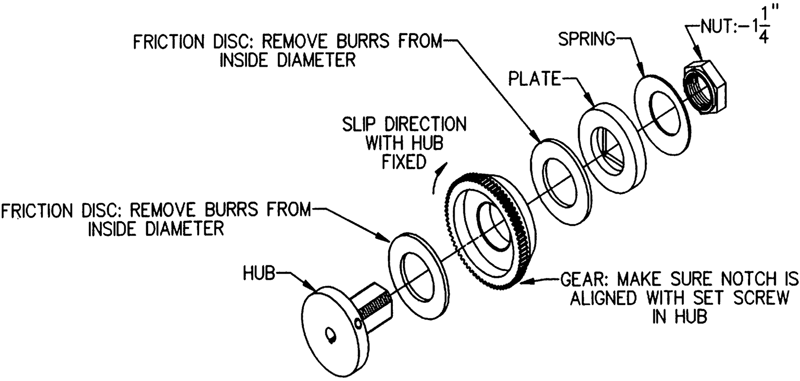

Operating Documentation
Direction 5193891-800, Rev# 5
LightSpeed 5.X Pro16 Limited Access Service Information (Adv)
Operating Documentation |
| Required Persons | Preliminary Reqs | Procedure | Finalization |
|---|---|---|---|
| 1 | Timing Not Applicable | Timing Not Applicable |
Procedure Effectivity:
| Last Revised: | October 28, 2003 |
| Item | Qty | Effectivity | Part# | Manufacturer | |
|---|---|---|---|---|---|
| Push force gauge, 0-50# or 0-100# | 1 | - | 46-308109P2 | - | |
| Item | Qty | Effectivity | Part# | Manufacturer |
|---|---|---|---|---|
| Loctite 242 | AR | - | - | - |
Place at least 100# on the cradle, toward the gantry end.
Remove the cradle drive cover from the bottom of the table.
Locate the clutch on the left end of the drive roller. Loosen the two set screws securing the 1-¼” hex nut with the 5/64” hex wrench. If necessary, release and move the cradle to rotate the drive roller and clutch, to gain access to the set screws.
Illustration 1: Table Clutch Assembly

Position the cradle about 3 feet from home. Tighten the hex nut a small amount (1/4 flat), and then measure the driving force into the gantry with the force gauge. Drive the cradle with the table-side controls at the fast speed, while the FE reaches through the gantry with the force gauge pushing on the end of the cradle. Push hard enough for the clutch to slip, and note the reading on the gauge. Insure that the drive roller is stationary (i.e., not slipping on the cradle bottom), and that the end of the clutch (i.e., hex nut) is rotating when the measurement is taken. If the roller is slipping on the cradle, then add more weight to the cradle.
For proper adjustment, the gauge reading should be as close to 40# as possible, but must not exceed 40#. An ideal range is 36-39#. Repeat Step 4 until the correct force is measured. Loctite and tighten the set screws and verify the reading again.
A check must now be made to see if the cradle releasing solenoid and gear rack are properly adjusted. Removing the cradle will make this check easier to perform and more accurate.
When the solenoid is energized, the gear rack is engaged in the clutch gear and allows the cradle to be driven. The engagement of the rack in the gear must not have any backlash, nor can the solenoid plunger be excessively extended out of the solenoid body. When correctly set, the solenoid plunger will be within 0.010" of bottoming-out in the body, when there is no backlash at the rack/gear interface.
Adjust the solenoid bracket so that the plunger is bottomed when the solenoid is energized, and then move the bracket forward (toward the gantry) until there is no backlash between the rack and gear, as checked at four, 90 degree apart, positions on the gear. The solenoid should be energized so that all the looseness is removed from the linkage; if energizing is not possible, be sure to push on the plunger itself (not the pin or link) when checking the adjustment.
Refit the cradle drive cover.
No finalization required.